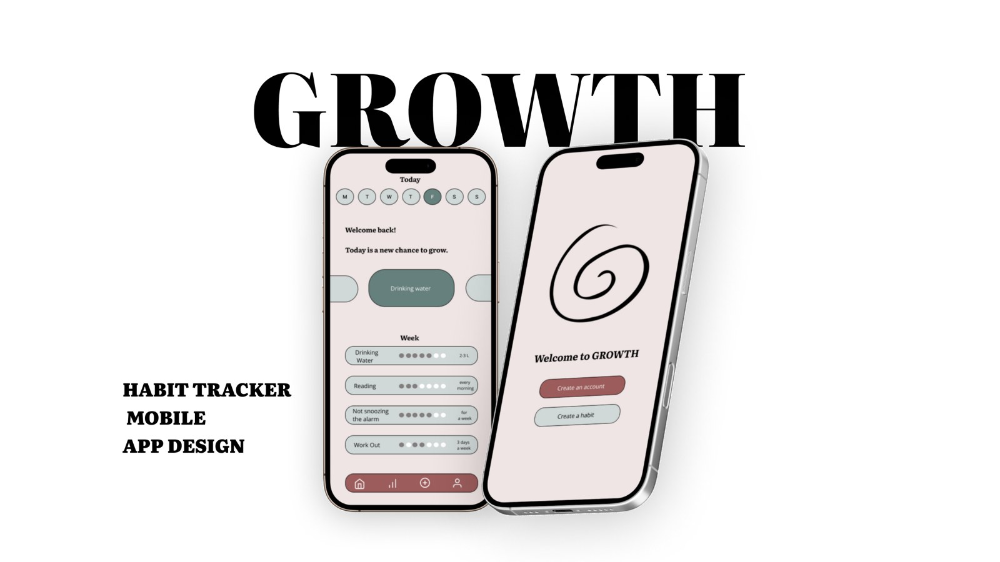
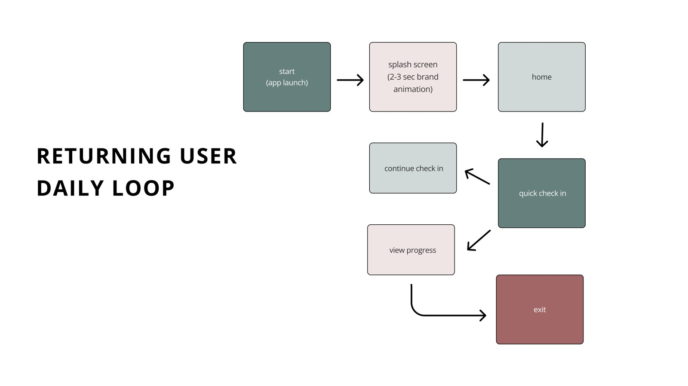
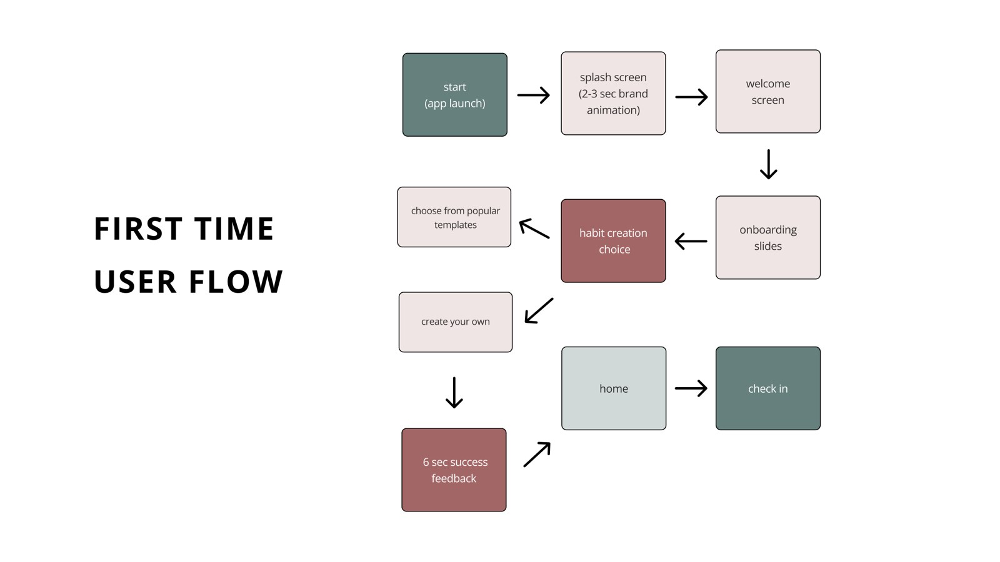
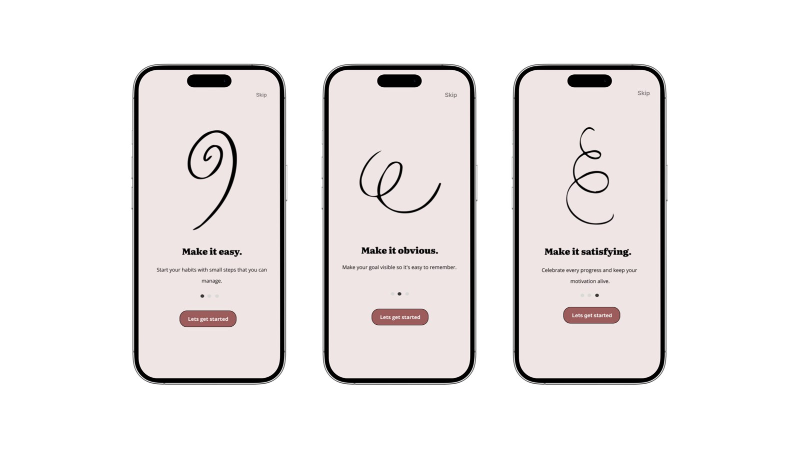
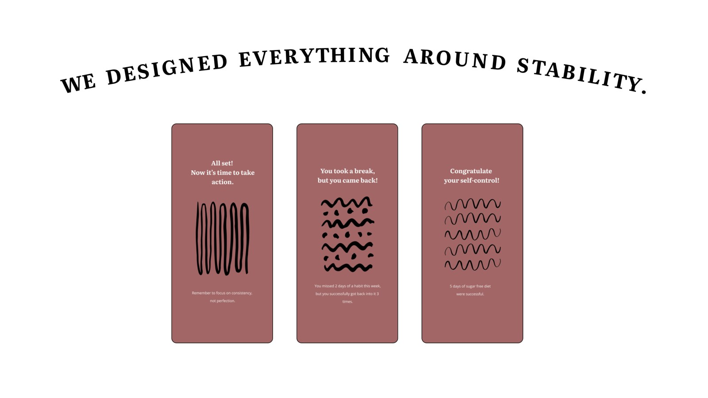
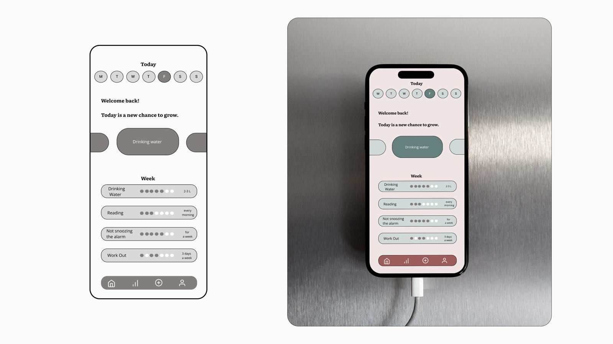

Growth is a supportive habit-building app focused on flexibility and stability.
The app rejects the pressure of streaks and high-stakes perfectionism. We understand that life happens, and missing a day shouldn't derail an entire journey.
It's a mindful approach that measures progress through achievable consistency targets rather than punishing daily failures — a continuous, supportive journey where getting back up is just as important as the initial start.





